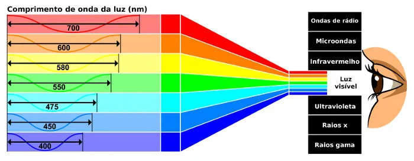
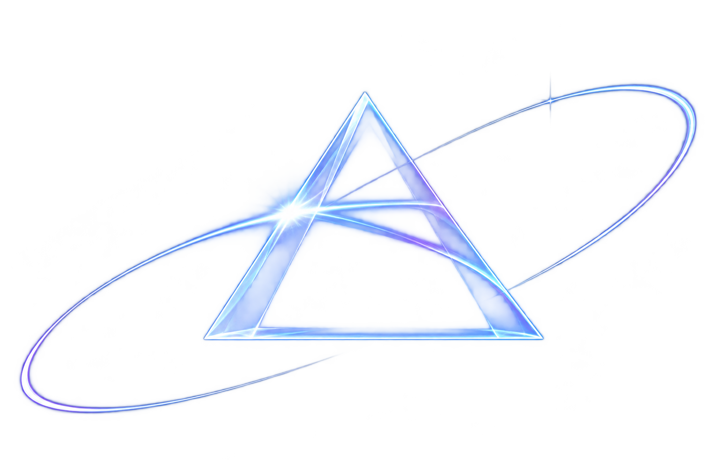
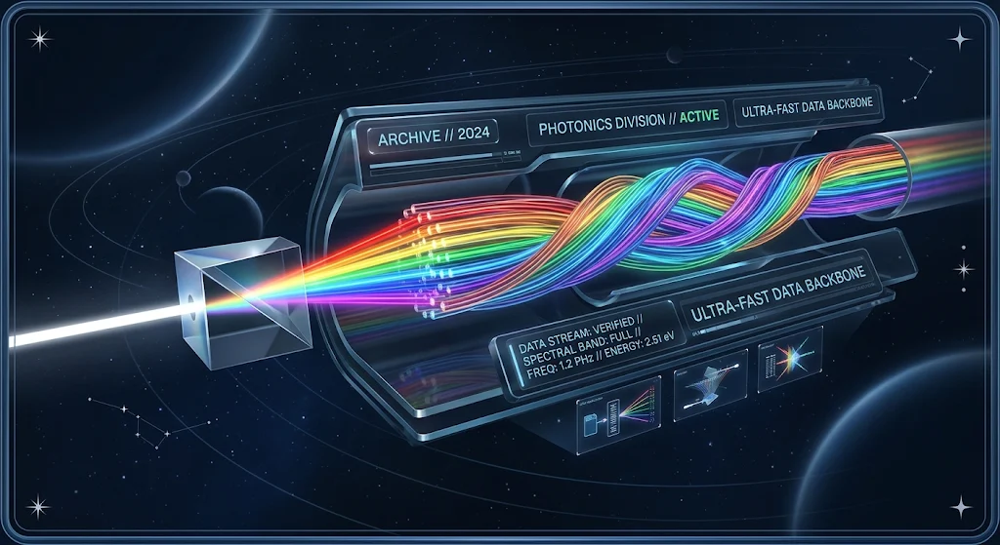

Espectro Invisível
O espectro visível é a porção da radiação eletromagnética composta por fótons capazes de estimular a visão humana.
Ele se situa entre o infravermelho (comprimentos de onda maiores) e o ultravioleta (comprimentos de onda menores).
O olho humano costuma responder a comprimentos de onda de aproximadamente 380 a 750 nanômetros. Essa faixa corresponde a
frequências de cerca de 400 a 790 terahertz.
Esses limites não são exatos e dependem da quantidade de luz que chega à retina e da sensibilidade do observador.

O estudo do espectro eletromagnético começou a ganhar destaque no século XIX, quando cientistas descobriram que existiam formas de luz que os olhos humanos não conseguiam enxergar.
Em 1800, William Herschel identificou a radiação infravermelha enquanto estudava o calor produzido pelas diferentes cores da luz solar. Já em 1801, Johann Wilhelm Ritter descobriu a radiação ultravioleta por meio de experimentos com substâncias químicas.

Cientista que descobriu
O espectro visível foi estudado pelo físico inglês Isaac Newton, em 1666. Ele realizou um experimento com um prisma de vidro, observando que a luz branca, ao atravessá-lo, se dividia em várias cores: vermelho, laranja, amarelo, verde, azul, anil e violeta. Assim, demonstrou que a luz branca é formada pela mistura de diferentes cores.
ELETROMAGENTICO
Maior comprimento de onda e menor energia da luz visível. É a primeira frequência perceptível após o limite do radiação infravermelha.
Aplicações na Medicina
Na medicina, a tecnologia dos lasers revolucionou diversas especialidades, permitindo procedimentos altamente precisos,
menos invasivos, com cortes mais limpos e recuperação muito mais rápida para os pacientes. Como o laser emite um feixe de luz extremamente focado,
coerente e de alta intensidade, ele pode ser controlado com precisão milimétrica.

Aplicação Tecnológica
O espectro visível corresponde à faixa da radiação eletromagnética que pode ser percebida pelo olho humano, compreendendo comprimentos de onda entre aproximadamente 400 nanômetros (violeta) e 700 nanômetros (vermelho). Embora represente apenas uma fração minúscula de todo o espectro eletromagnético, a luz visível é a base de uma imensidão de tecnologias modernas que transformaram a comunicação, a medicina, a indústria e o entretenimento.